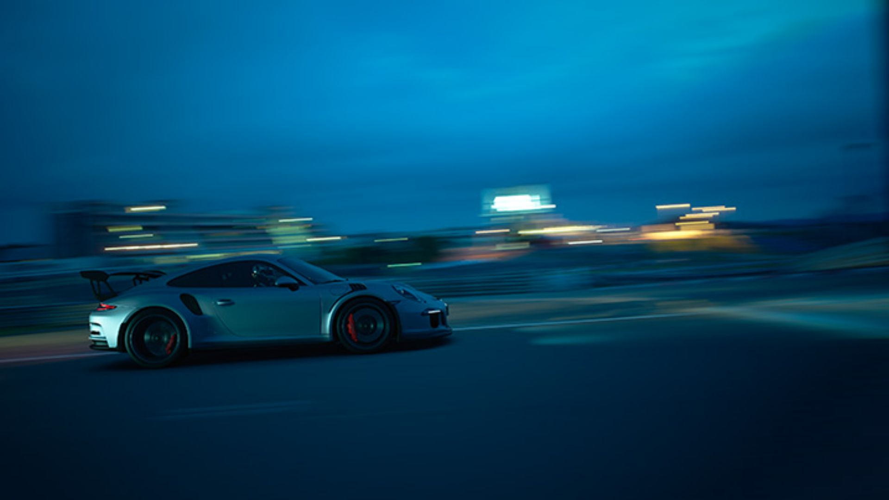
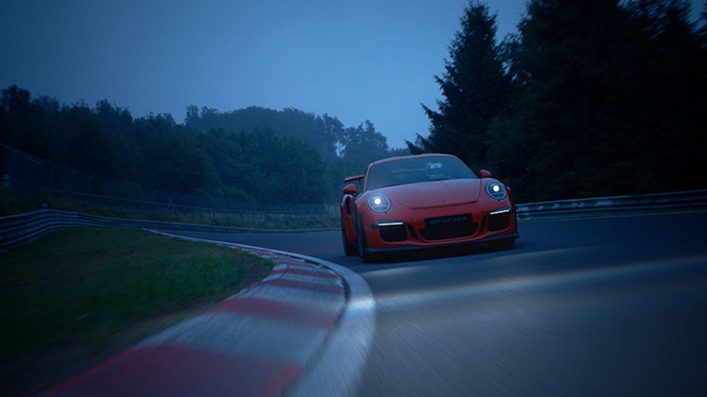

Сегодня мы с радостью сообщаем, что с выходом Gran Turismo Sport, который состоится позднее в этом году, в серии Gran Turismo впервые появится марка Porsche. На прошлой неделе, после начала европейского закрытого бета-теста и выхода обновления 1.04, мы уже показали изображения всеми любимой Porsche 911 GT3 RS.
Перспективы этого сотрудничества вызывают у нас подлинный восторг. Успех марки Porsche в автоспорте можно назвать образцовым: за многочисленные победы в гонках на выносливость ее считают лидером в этом виде состязаний. Названия таких популярных моделей, как Carrera, Targa и Panamera, напоминают о богатом гоночном прошлом компании, которое всегда было частью ДНК Porsche. Компания присоединяется к нам не столько ради престижа, сколько по принципиальным мотивам постоянного совершенствования своей продукции с использованием гоночных технологий.

В свою очередь, Polyphony в последние годы укрепляет связи с реальным автоспортом: в частности, продюсер серии Кадзунори Ямаути принял участие в "24 часах Нюрбургринга". Эту тенденцию продолжат и будущие чемпионаты FIA Gran Turismo.
